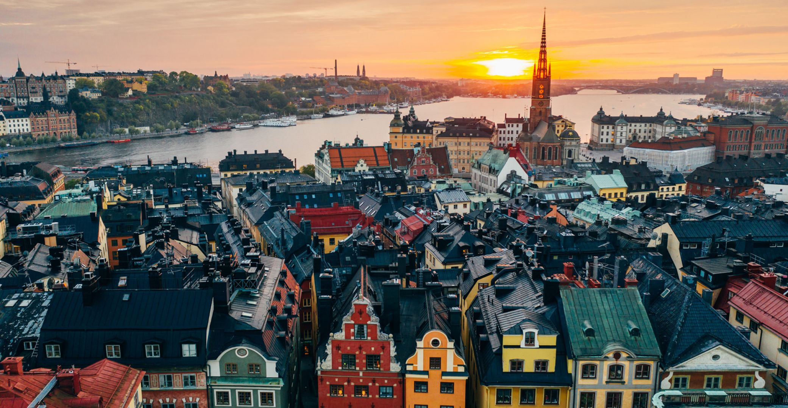

İsveç
Kuzey Avrupa'nın yenilikçi ve sürdürülebilir ülkesi

1. İsveç Nerede Bulunur? (Coğrafi Konum)
İsveç, Kuzey Avrupa'daki İskandinav Yarımadası'nın doğusunda yer alan bağımsız bir devlettir. Başkenti Stockholm olan ülke, İskandinavya'nın en geniş topraklarına sahiptir.[1] İsveç İstatistik Kurumu'nun (SCB) resmî kadastro ve arazi kullanımı ölçüm verilerine göre ülkenin toplam yüzey alanı 450.295 km²dir. Bu alanın 410.335 km²'sini kara alanı, 39.960 km²'sini ise göller ve akarsulardan oluşan iç su yüzeyleri oluşturur.[2]
İsveç'in coğrafi sınırları ve kıyı hatları şu şekildedir:
- Batı Kara Sınırı: Norveç ile toplam 1.619 kilometrelik sınır hattı boyunca İskandinav Sıradağları (Skanderna) uzanır.
- Kuzeydoğu Kara Sınırı: Finlandiya ile Torne ve Muonio nehirleri boyunca 614 kilometrelik kara sınırı bulunur.
- Doğu ve Güneydoğu Kıyısı: Botni Körfezi (Gulf of Bothnia) ve Baltık Denizi boyunca uzanan uzun kıyı şeridi yer alır.
- Güneybatı Deniz Sınırı: Kattegat ve Skagerrak boğazları üzerinden Kuzey Denizi'ne açılır; Öresund Boğazı üzerinde yer alan Öresund Köprüsü ile Danimarka'ya doğrudan karayolu ve demiryolu bağlantısı sağlanır.
Ülke arazisinin yaklaşık %69'u boreal iğne yapraklı ormanlarla kaplıdır. İsveç genelinde yaklaşık 100.000 göl bulunmakta olup en büyükleri Vänern (5.650 km²), Vättern ve Mälaren'dir.[1]
2. İsveç'in Tarihsel Gelişimi
İsveç'in tarihi; Viking Çağı keşifleri, Orta Çağ krallıklarının birleşmesi, 17. yüzyıl Baltık büyük güç dönemi (Stormaktstiden), iki yüzyılı aşan askerî bağlantısızlık ve modern demokratik refah devletinin inşasını kapsar.[3] Viking Çağı'nda (MS 800–1050) İsveçli Vikingler (Varangiyanlar), özellikle Baltık Denizi üzerinden Doğu Avrupa nehir yollarını kullanarak Karadeniz ve Konstantinopolis'e kadar uzanan ticaret ağları kurmuştur.
1397 yılında Danimarka, Norveç ve İsveç'i tek bir monarşi altında birleştiren Kalmar Birliği kurulmuş; ancak Danimarka hâkimiyetine karşı çıkan İsveçliler, 6 Haziran 1523 tarihinde Kral Gustav Vasa'nın tahta çıkmasıyla bağımsızlığını ilan etmiştir. Bu tarih günümüzde İsveç Ulusal Günü olarak kutlanır. 17. yüzyılda Kral II. Gustav Adolf önderliğinde Otuz Yıl Savaşları'na giren İsveç, Baltık Denizi çevresindeki toprakları kontrol ederek bölgesel bir imparatorluğa dönüşmüştür.
1809 yılında Finlandiya'nın Rusya'ya kaybedilmesinin ve 1814'te Norveç ile kurulan birliğin (1905'e kadar süren) ardından İsveç, doğrudan devletler arası savaşlara katılmamış ve 200 yılı aşkın süre tarafsızlık ile askerî bağlantısızlık politikası izlemiştir. 1 Ocak 1995 tarihinde Avrupa Birliği'ne üye olan İsveç, 2024 yılında tarihî bir güvenlik politikası değişikliğine gitmiştir.
| Tarih / Dönem | Tarihsel Olay | Sonuç ve Önemi |
|---|---|---|
| MS 800 – 1050 | Viking Çağı | Doğu Avrupa nehir yolları ve Bizans ile ticaret hatlarının kurulması. |
| 1397 | Kalmar Birliği | Danimarka, İsveç ve Norveç'in tek taht altında birleşmesi. |
| 6 Haziran 1523 | Gustav Vasa'nın Tahta Çıkışı | Kalmar Birliği'nden ayrılış ve modern İsveç ulus devletinin kuruluşu. |
| 1611 – 1721 | Büyük Güç Dönemi (Stormaktstiden) | Baltık Denizi çevresinde bölgesel askerî ve siyasi hâkimiyet. |
| 1814 | Bağlantısızlık Politikasının Başlangıcı | Doğrudan savaşa girmeme ve 200 yılı aşan barış dönemi. |
| 1 Ocak 1995 | Avrupa Birliği Üyeliği | İsveç'in AB ortak pazarına ve kurumlarına tam katılımı. |
| 7 Mart 2024 | NATO Üyeliği | Askerî bağlantısızlığın sonlanması ve 32. müttefik olarak ittifaka katılım. |
İsveç'in NATO Üyeliği (2024)
İsveç, 7 Mart 2024 tarihinde katılım belgesini Washington'da ABD Hükûmetine tevdi ederek Kuzey Atlantik Antlaşması Örgütü'nün (NATO) resmen 32. üyesi olmuştur.[4]
Rusya Federasyonu'nun 24 Şubat 2022 tarihinde Ukrayna'ya yönelik başlattığı geniş çaplı askerî işgal, İsveç ve komşusu Finlandiya'nın güvenlik ortamını kökten değiştirmiştir. İsveç kamuoyunda ve parlamentosunda (Riksdag) oluşan geniş mutabakat sonucunda Hükûmet, 18 Mayıs 2022 tarihinde NATO'ya resmî üyelik başvurusunda bulunmuştur.[3]
NATO üyeliği ile birlikte İsveç'in 1814 yılından bu yana uyguladığı iki yüzyılı aşkın tarafsızlık ve barış zamanında askerî ittifaklara girmeme (bağlantısızlık) doktrini resmen sona ermiştir. Bu üyelik, İsveç'in NATO Antlaşması'nın 5. maddesinde tanımlanan kolektif savunma taahhüdü kapsamına girmesini sağlamış; Baltık Denizi bölgesindeki müttefik savunma kabiliyetlerini pekiştirmiştir.[4]
3. İsveç'in Ekonomisi ve Para Birimi
İsveç; yüksek kişi başına gelir düzeyi, güçlü inovasyon kapasitesi, rekabetçi sanayi tabanı ve gelişmiş sosyal refah sistemi ile tanınan açık bir karma piyasa ekonomisine sahiptir.[5] Dünya Bankası ve Eurostat'ın resmî ulusal hesaplar verilerine göre 2023-2024 dönemi itibarıyla İsveç'in nominal Gayri Safi Yurtiçi Hasılası (GSYH) yaklaşık 590 milyar ABD doları, kişi başına düşen nominal GSYH'si ise yaklaşık 55.500 ABD doları seviyesindedir.[6]
İsveç Kronu (SEK) ve Riksbank
İsveç'in resmî para birimi İsveç Kronudur (uluslararası kodu: SEK, sembolü: kr). Para politikası, 1668 yılında kurulan ve dünyanın faaliyet gösteren en eski merkez bankası unvanına sahip olan Sveriges Riksbank tarafından bağımsız olarak yürütülür.[7]
İsveç, 1995 yılından bu yana Avrupa Birliği üyesi olmasına karşın ortak para birimi Euro'yu (EUR) kullanmamaktadır. 14 Eylül 2003 tarihinde yapılan ulusal referandumda seçmenlerin %55,9'u Euro bölgesine katılmayı reddetmiştir. Bu nedenle İsveç, Avrupa Döviz Kuru Mekanizması'na (ERM II) kasten katılmayarak para politikasını kendi ekonomik döngülerine göre bağımsız belirleme esnekliğini sürdürmektedir.[7]
Başlıca Ekonomik Sektörler
İsveç ekonomisi katma değeri yüksek imalat sanayii, ileri mühendislik, dijital teknolojiler ve küresel hizmet sektörlerine dayanmaktadır. Ülke, Eurostat verilerine göre GSYH'sinin yaklaşık %3,4'ünü araştırma ve geliştirmeye (Ar-Ge) ayırarak Avrupa'nın en yenilikçi ülkeleri arasında yer alır.[5]
| Sektör | Öne Çıkan Şirketler / Alanlar | Sektörel Nitelik ve Pay |
|---|---|---|
| Otomotiv ve Ağır Sanayi | Volvo Group, Volvo Cars, Scania | Kamyon, otobüs, inşaat makineleri ve binek araç ihracatında küresel pay. |
| Telekomünikasyon ve BT | Ericsson, Spotify, Klarna, King | 5G altyapısı, müzik yayını, fintech ve oyun teknolojilerinde küresel öncülük. |
| Ormancılık ve Kağıt | Stora Enso, SCA, Holmen | Yenilenebilir orman ürünleri, ahşap yapı malzemeleri ve selüloz üretimi. |
| İlaç ve Yaşam Bilimleri | AstraZeneca, Getinge, Elekta | Biyoteknoloji, kardiyovasküler ilaçlar ve medikal görüntüleme sistemleri. |
| Madencilik ve Metalürji | LKAB, SSAB, Boliden | Avrupa'nın en büyük demir cevheri üretimi ve yeşil çelik (HYBRIT) yatırımları. |
| Perakende ve Tüketim | IKEA, H&M, Electrolux | Mobilya, hazır giyim ve beyaz eşya alanında küresel mağaza zincirleri. |
Dış Ticaret ve Sosyal Refah Sistemi
İsveç dış ticaret fazlası veren bir ekonomidir. İhracatın yaklaşık %70'i Avrupa Birliği ülkelerine (başta Almanya, Danimarka ve Finlandiya) ile AB üyesi olmayan İskandinav komşusu Norveç'e ve Amerika Birleşik Devletleri'ne yöneliktir.[5] Temel ihraç kalemlerini makineler, motorlu kara taşıtları, elektronik cihazlar, ilaçlar, kağıt ürünleri ve demir-çelik oluşturur.
İsveç, "İskandinav Modeli" (Nordic Model) olarak adlandırılan sosyal refah sistemini uygular. Bu model; yüksek gelir vergileri karşılığında ücretsiz kamu eğitimi, evrensel sağlık hizmeti, kapsamlı ebeveyn izinleri (çocuk başına 480 güne kadar) ve sendikalarla işverenler arasındaki toplu sözleşmelere dayalı esnek ve güvenli bir işgücü piyasası sunar.
4. İsveç'in İklimi ve Doğa Olayları
İsveç, 55° ile 69° kuzey enlemleri arasında 1.574 kilometre boyunca uzandığı için ülkenin güneyi ile kuzeyi arasında belirgin iklim farklılıkları mevcuttur.[8] Bulunduğu enlemlere rağmen Meksika Körfezi'nden gelen sıcak Gulf Stream (Kuzey Atlantik Akıntısı) akıntısı sayesinde İsveç, aynı enlemdeki Sibirya veya Kanada'ya kıyasla oldukça ılıman bir iklime sahiptir.
| Bölge | İklim Sınıflandırması | Kış Ortalaması (Ocak) | Yaz Ortalaması (Temmuz) | Karakteristik Özellikler |
|---|---|---|---|---|
| Güney (Götaland - Malmö, Göteborg) | Ilıman Okyanusal (Cfb) | -1°C ile +2°C | +16°C ile +22°C | Ilıman kışlar, kısa süreli kar örtüsü, yağışlı sonbahar. |
| Orta (Svealand - Stockholm, Uppsala) | Nemli Karasal (Dfb) | -4°C ile 0°C | +15°C ile +23°C | Belirgin dört mevsim, düzenli don olayları, güneşli yazlar. |
| Kuzey (Norrland - Kiruna, Abisko) | Subarktik / Boreal (Dfc) | -10°C ile -16°C | +10°C ile +17°C | Uzun ve karlı kışlar (-30°C/-40°C uç değerler), serin yazlar. |
Kuzey Işıkları (Aurora Borealis) ve Işık Kirliliği
Kuzey Işıkları, Güneş'ten gelen yüklü parçacıkların Dünya'nın manyetik alanıyla etkileşime girerek üst atmosferdeki oksijen ve azot gazı atomlarını uyarmasıyla ortaya çıkan doğal ışık parlamalarıdır. Visit Sweden'ın resmî rehberine göre aurora gözlem sezonu eylül sonundan nisan başına kadar devam eder; gecelerin en uzun ve en karanlık olduğu kasım ile mart ayları arası en yüksek gözlem şansını sunar.[9]
Kuzey Işıkları'nın net olarak izlenebilmesinde ışık kirliliği (light pollution) belirleyici bir faktördür. Şehir merkezlerinden, sokak lambalarından ve sanayi tesislerinden yayılan yapay aydınlatmalar, gökyüzünün parlaklığını artırarak auroranın soluk yeşil, mor ve kırmızı tonlarını görünmez hale getirir. Bu nedenle başarılı bir gözlem için yapay ışıklardan tamamen arındırılmış kırsal alanlar tercih edilmelidir. İsveç Laponyası'ndaki Abisko Ulusal Parkı, hem sıfır yapay ışık kirliliğine sahip olması hem de çevredeki dağların bulutları engellemesiyle oluşan "mavi delik" (Blue Hole) adı verilen açık gökyüzü mikroiklimi sayesinde dünyanın en iyi aurora izleme merkezi (Aurora Sky Station) kabul edilir.[9]
Gece Yarısı Güneşi (Midnight Sun)
Dünya'nın 23,5 derecelik eksen eğikliği nedeniyle Kuzey Kutup Dairesi'nin (66°33′ K) kuzeyinde kalan bölgelerde yaz gündönümü civarında güneş 24 saat boyunca ufkun altına batmaz. İsveç'in en kuzeyindeki Kiruna ve Riksgränsen gibi yerleşimlerde mayıs sonundan temmuz ortasına kadar yaklaşık 50 gün boyunca gece yarısı güneşi yaşanır. Ülkenin güneyindeki Stockholm gibi şehirlerde ise yaz aylarında güneş batmasına rağmen ufuk çizgisi kararmayarak alacakaranlık şeklinde "beyaz geceler" görülür.[8]
5. İsveç'in Mutfak Kültürü
Geleneksel İsveç mutfağı (Husmanskost); ülkenin soğuk iklimi, geniş kıyı şeridi ve zengin orman yapısının etkisiyle şekillenmiştir.[10] Mutfak kültürünün temelini tuzlama, kurutma, fermente etme ve salamura yöntemleriyle saklanan deniz ürünleri, kök sebzeler, av etleri ve orman meyveleri oluşturur. Günümüzde İsveç mutfağı, bu geleneksel temelleri çağdaş ve sürdürülebilir gastronomi anlayışıyla birleştirmektedir.
| Yemek Adı | Türkçe Karşılığı | Kısa Açıklama ve Tüketim Biçimi |
|---|---|---|
| Köttbullar | İsveç Köftesi | Dana ve domuz kıymasıyla hazırlanan küçük yuvarlak köfte; patates püresi, kahverengi krema sosu ve lingonberry reçeliyle servis edilir. |
| Kanelbullar | Tarçınlı Çörek | Kakuleli mayalı hamur, tereyağı, tarçın ve inci şekeriyle fırınlanan, Fika'nın sembolü hamur işi. |
| Gravad lax | Marine Somon | Çiğ somon filetolarının tuz, şeker ve bol taze dereotuyla birkaç gün marine edilmesiyle yapılan soğuk başlangıç. |
| Ärtsoppa | Sarı Bezelye Çorbası | Kuru sarı bezelye, et suyu, domuz eti ve kekikle ağır ateşte pişirilen geleneksel çorba. |
| Pannkakor | İsveç Krepi | İnce kıvamlı krep; genellikle Ärtsoppa'nın ardından çilek reçeli ve çırpılmış krema ile sunulur. |
| Sill | Marine Ringa Balığı | Sirke, şeker, soğan, hardal veya dereotlu soslarla salamura edilen balık; Midsommar ve Noel sofralarının baş yemeğidir. |
| Raggmunk | Patates Pankeki | Rendelenmiş patates ve krep hamuruyla tavada pişirilen, kızarmış domuz pastırması ve lingonberry ile yenen yemek. |
| Prinsesstårta | Prenses Pastası | Pandispanya, vanilyalı krema ve ahududu katmanlarının üzeri yeşil badem ezmesi (marzipan) ile kaplanan kutlama pastası. |
Fika Kültürü ve Mutfak Gelenekleri
İsveç kültürünün en köklü sosyal ritüellerinden biri Fikadır.[11] Fika, yasal bir iş kanunu zorunluluğu olmamakla birlikte, İsveç işyeri kültüründe (arbetskultur) ve gündelik yaşamında işverenler ve çalışanlar tarafından doğal bir teamül olarak benimsenmiş, günde genellikle bir veya iki kez uygulanan köklü bir sosyal mola geleneğidir. Fika; sadece kahve içmekten ibaret olmayıp, günün koşturmacasına bilinçli bir ara vererek iş arkadaşları, dostlar veya aileyle bir araya gelme, hiyerarşisiz sohbet etme ve dinlenme eylemidir. Fika'ya çoğunlukla taze demlenmiş filtre kahve ile tarçınlı çörek (Kanelbulle) eşlik eder.
Ülkenin bir diğer köklü geleneği, her perşembe günü sarı bezelye çorbası ve ardından krep yenmesidir (ärtsoppa och pannkakor). Bu gelenek, Orta Çağ'da cuma günleri tutulan Katolik orucundan önce perşembe günü doyurucu bir yemek tüketme ihtiyacından doğmuş; günümüzde ordudan okul yemekhanelerine ve lokantalara kadar yaşatılmaktadır. Ayrıca 1999 yılından bu yana her yıl 4 Ekim günü tüm ülkede "Tarçınlı Çörek Günü" (Kanelbullens dag) olarak kutlanmakta ve milyonlarca çörek tüketilmektedir.[11]
6. İsveç'in Dini ve İnanç Yapısı
İsveç, tarihsel olarak Hristiyanlığın Lüteran mezhebine bağlı bir ülke olmakla birlikte, günümüzde dünyanın en seküler ve dinin kamusal yaşamdaki etkisinin en düşük olduğu toplumlarından biridir.[12] İsveç Anayasası, din, vicdan ve ibadet özgürlüğünü tam güvence altına almaktadır.
İsveç Kilisesi (Svenska Kyrkan), 1527 yılındaki Reform hareketinden 1 Ocak 2000 tarihine kadar resmî devlet kilisesi konumundaydı; bu tarihte devlet ile kilise resmen birbirinden ayrılmıştır. 1996 yılına kadar doğan her İsveç vatandaşı otomatik olarak kilise üyesi sayılıyordu. Svenska Kyrkan'ın 2024 yılı resmî istatistiklerine göre kiliseye kayıtlı üye sayısı yaklaşık 5,36 milyon kişi olup, bu rakam ülke nüfusunun yaklaşık %51,2'sine karşılık gelmektedir.[12] Kilise üyeliği oranı demografik değişimler ve üyelikten ayrılmalar nedeniyle her yıl yaklaşık %1 oranında kademeli olarak azalmaktadır.
Sosyolojik araştırmalar, kilise üyeliğinin İsveçlilerin büyük bölümü için kişisel bir dindarlıktan ziyade vaftiz, düğün, cenaze törenleri ve tarihî kültürel mirası koruma isteğine dayalı bir aidiyet olduğunu göstermektedir. Düzenli olarak pazar ayinlerine katılanların oranı nüfusun %2-3'ünü geçmemektedir.[12]
İsveç yasaları gereğince devletin nüfus kütüklerinde bireylerin dinî inancını kaydetmesi kesin olarak yasaktır (kişisel veri gizliliği). Bu nedenle diğer dinî toplulukların büyüklüğüne dair doğrudan bir nüfus sayımı verisi bulunmamaktadır. İsveç Dinî Topluluklara Destek Kurumu'na (SST) kayıtlı ve devlet desteği alan dinî cemaatlerin resmî beyanlarına göre; tescilli İslami kuruluşlarla bağlantılı yaklaşık 200.000-250.000 kayıtlı katılımcı (kültürel Müslüman kökenli tahmini nüfus yaklaşık 500.000), yaklaşık 90.000-100.000 Ortodoks ve 120.000 civarında Katolik Hristiyan yaşamaktadır.
7. İsveç'in Ulaşım Sistemi
İsveç, geniş coğrafyasına ve düşük nüfus yoğunluğuna rağmen yüksek güvenlik standartlarına sahip, dakik ve çevre dostu bir ulaşım ağı geliştirmiştir.[13] Ulaşım altyapısı İsveç Ulaştırma İdaresi (Trafikverket) tarafından yönetilmektedir.
Havayolu Ulaşımı
Ülkedeki temel sivil havalimanı altyapısı devlete ait Swedavia şirketi tarafından işletilen 10 havalimanından oluşur.[14]
- Stockholm Arlanda Havalimanı (ARN): Başkentin 42 km kuzeyinde yer alan ve 4 terminale sahip olan Arlanda, İsveç'in en büyük, İskandinavya'nın ise Kopenhag Havalimanı'nın ardından ikinci en yoğun havalimanıdır. 140'tan fazla uluslararası varış noktasına direkt sefer düzenlenir. Arlanda Express hızlı treni ile Stockholm merkezine 18 dakikada ulaşım sağlanır.[14]
- Göteborg Landvetter (GOT) ve Malmö (MMX): Ülkenin batı ve güney bölgelerini Avrupa'nın önemli merkezlerine bağlayan diğer başlıca uluslararası havalimanlarıdır.
Karayolu ve Otoyol Ağı
İsveç Ulaştırma İdaresi (Trafikverket) verilerine göre ülke genelindeki toplam karayolu uzunluğu yaklaşık 570.000 kilometredir.[13] Bu ağın yaklaşık 98.500 kilometresini devlet karayolları, 43.000 kilometresini belediye yolları, 430.000 kilometresini ise kırsal ve özel orman yolları oluşturur. Bu ağ içerisindeki yüksek standartlı bölünmüş otoyol (motorväg) uzunluğu yaklaşık 2.140 kilometredir. Otoyollar güneyde Danimarka sınırından başlayıp Malmö, Göteborg ve Stockholm üzerinden Uppsala'ya kadar uzanır. İsveç, trafikte can kaybını sıfıra indirmeyi hedefleyen küresel "Vision Zero" (Sıfır Vizyonu) güvenlik politikasının öncüsüdür.
Demiryolu Ulaşımı
İsveç'te demiryolu ağı yaklaşık 10.900 kilometre uzunluğundadır ve bu hatların %80'inden fazlası elektriklidir.[13] Demiryolu ray ve sinyalizasyon altyapısı kamuya (Trafikverket) aittir. Yolcu taşımacılığında devlete ait SJ (Statens Järnvägar) şirketi ile özel operatörler rekabetçi bir ortamda hizmet verir. SJ X2000 tipi yüksek hızlı trenler; Stockholm, Göteborg, Malmö ve Kopenhag arasında 200 km/s hızla yolcu taşır. Ayrıca kuzeyde Luleå ile Norveç'in Narvik limanı arasında demir cevheri taşıyan dünyanın en ağır tren hatlarından biri (Malmbanan) faaliyet gösterir.
Stockholm Metrosu (Tunnelbana) ve Şehir İçi Raylı Sistemler
Stockholm'ün toplu taşıma omurgasını SL (Storstockholms Lokaltrafik) tarafından işletilen Tunnelbana (T-Bana) metro sistemi oluşturur.[15] Sistem; Yeşil, Kırmızı ve Mavi olmak üzere 3 ana hatta dağılan 7 güzergahtan ve toplam 108 kilometre uzunluğunda 100 istasyondan oluşur. 100 istasyonun 90'ından fazlası heykeller, mozaikler, kaya oyma freskler ve resimlerle donatıldığı için Stockholm Metrosu uluslararası alanda "Dünyanın en uzun sanat galerisi" olarak adlandırılmaktadır.[15]
Denizyolu ve Feribot Hatları
Baltık Denizi ve Kattegat üzerinden yoğun bir yolcu ve Ro-Ro feribot trafiği yürütülür. Stockholm ve çevresindeki limanlardan Finlandiya (Helsinki, Turku, Åland Adaları), Estonya (Tallinn) ve Letonya'ya; güney limanlarından (Trelleborg, Ystad, Karlskrona) Polonya, Almanya ve Danimarka'ya düzenli seferler düzenlenmektedir.
8. Sıkça Sorulan Sorular (SSS)
1. İsveç nerede bulunur?
İsveç, Kuzey Avrupa'da, İskandinav Yarımadası'nın doğusunda yer alır. Batıda Norveç, kuzeydoğuda Finlandiya ile kara sınırı vardır; doğusunda ve güneyinde Baltık Denizi ile Botni Körfezi uzanır.
2. İsveç'in başkenti neresidir?
İsveç'in başkenti ve en büyük şehri Stockholm'dür. Stockholm, Mälaren Gölü ile Baltık Denizi'nin birleştiği 14 ada üzerine kurulmuştur.
3. İsveç'in nüfusu ne kadardır?
İsveç İstatistik Kurumu (SCB) nüfus kütüğü verilerine göre 31 Aralık 2024 tarihi itibarıyla İsveç'in nüfusu 10.587.710 kişidir.
4. İsveç'in resmî dili nedir?
İsveç'in resmî dili İsveççe'dir (Svenska). Ayrıca Fince, Meänkieli, Sami dilleri, Romani ve Yidiş resmî olarak tanınan azınlık dilleridir.
5. İsveç'in para birimi nedir?
İsveç'in resmî para birimi İsveç Kronu'dur (uluslararası kodu: SEK). Para politikası 1668 yılında kurulan dünyanın en eski merkez bankası Sveriges Riksbank tarafından yönetilir.
6. İsveç neden euro kullanmıyor?
İsveç, 1995 yılında Avrupa Birliği'ne üye olmasına rağmen 14 Eylül 2003 tarihinde yapılan halkoylamasında (referandum) seçmenlerin %55,9'unun 'Hayır' oyu vermesi sonucunda bağımsız para birimini korumuştur ve ERM II mekanizmasına katılmamıştır.
7. İsveç'in ekonomik yapısı nasıldır?
İsveç, yüksek düzeyde sanayileşmiş, ihracata dayalı bir karma piyasa ekonomisine ve güçlü bir sosyal refah sistemine (Nordic Model) sahiptir. Otomotiv, telekomünikasyon, mühendislik, ilaç, ormancılık ve bilgi teknolojileri temel sektörlerdir.
8. İsveç Avrupa Birliği üyesi midir?
Evet, İsveç 1 Ocak 1995 tarihinden bu yana Avrupa Birliği'nin tam üyesidir.
9. İsveç NATO'ya ne zaman katılmıştır?
İsveç, katılım belgesini Washington'da ABD Hükûmetine teslim ederek 7 Mart 2024 tarihinde resmen NATO'nun 32. üyesi olmuştur.
10. İsveç neden NATO'ya katılmıştır?
Rusya'nın Şubat 2022'de Ukrayna'ya yönelik geniş çaplı işgali sonrasında Avrupa güvenlik mimarisinin bozulması üzerine İsveç, 200 yılı aşkın süredir sürdürdüğü askerî bağlantısızlık politikasını sonlandırarak 18 Mayıs 2022'de NATO'ya başvurmuş ve 5. madde kolektif savunma güvencesini tercih etmiştir.
11. İsveç'in geleneksel yemekleri nelerdir?
Başlıca geleneksel yemekler; patates püresi ve lingonberry reçeli ile sunulan İsveç köftesi (Köttbullar), dereotlu marine somon (Gravad lax), marine ringa balığı (Sill), sarı bezelye çorbası (Ärtsoppa), patates pankeki (Raggmunk) ve Prenses Pastası'dır (Prinsesstårta).
12. İsveç'te Fika kültürü nedir?
Fika, İsveç'te kahve, çay ve çoğunlukla tarçınlı çörek (Kanelbulle) gibi hamur işleri eşliğinde aile, arkadaşlar veya iş arkadaşlarıyla sohbet etmek amacıyla işyerlerinde ve gündelik hayatta doğal olarak uygulanan köklü bir sosyal mola geleneğidir.
13. İsveç'in iklimi nasıldır?
Güney ve orta kesimlerde Gulf Stream akıntısının etkisiyle ılıman deniz ve karasal iklim görülürken, kuzey kesimlerde uzun, sert ve karlı kışların yaşandığı subarktik iklim hâkimdir.
14. İsveç'te Kuzey Işıkları ne zaman görülür?
Kuzey Işıkları (Aurora Borealis), İsveç'in kuzey kutup kuşağında (özellikle Abisko ve Kiruna çevresinde) eylül sonundan nisan başına kadar, özellikle kasım ile mart ayları arasındaki yapay ışık kirliliğinden uzak, açık ve karanlık gecelerde gözlemlenir.
15. İsveç'in ulaşım sistemi nasıldır?
İsveç; Stockholm Arlanda başta olmak üzere gelişmiş havalimanlarına, 2.140 km'si otoyol olan 570.000 km'lik karayolu ağına, %80'i elektrikli 10.900 km demiryoluna ve Stockholm T-Bana metro ağına sahip modern bir ulaşım altyapısına sahiptir.
16. İsveç'in yönetim biçimi nedir?
İsveç, parlamenter demokrasi ile yönetilen anayasal bir monarşidir. Devlet başkanı Kral XVI. Carl Gustaf'tır; yürütme yetkisi ise başbakan liderliğindeki hükûmet ve yasama organı Riksdag'a aittir.
9. Kaynakça ve Resmî Doğrulamalar
- Sweden.se: İsveç Resmî Portalı, Coğrafya ve İklim Raporu. https://sweden.se/life/society/geography-and-climate
- Statistics Sweden (SCB): İsveç İstatistik Kurumu, Resmî Nüfus ve Arazi İstatistikleri (31 Aralık 2024 verileri). https://www.scb.se/en/finding-statistics/statistics-by-subject-area/population/population-composition/population-statistics/
- Government Offices of Sweden (Regeringskansliet): İsveç Hükûmeti, İsveç'in NATO Üyelik Süreci. https://www.government.se/government-policy/sweden-in-nato/
- NATO Resmî Portalı: "Relations with Sweden - Accession and Full Membership", 7 Mart 2024. https://www.nato.int/cps/en/natohq/topics_205938.htm
- European Commission / Eurostat: İsveç Ulusal Hesaplar, Dış Ticaret ve Ar-Ge Göstergeleri. https://ec.europa.eu/eurostat/databrowser/view/tec00001/default/table
- World Bank Open Data: Sweden GDP and Economic Indicators Country Profile. https://data.worldbank.org/country/sweden
- Sveriges Riksbank: İsveç Merkez Bankası, Para Politikası, Kron ve 2003 Referandumu. https://www.riksbank.se/en-gb/monetary-policy/
- SMHI (Sveriges meteorologiska och hydrologiska institut): İsveç İklimi ve 1991-2020 Referans Normalleri. https://www.smhi.se/klimat/klimatet-da-och-nu/
- Visit Sweden: Kuzey Işıkları (Aurora Borealis) Gözlem Rehberi ve Abisko. https://visitsweden.com/what-to-do/nature-adventure/nature-phenomena/northern-lights/
- Visit Sweden - Food & Drink: Geleneksel İsveç Husmanskost Yemek Kültürü. https://visitsweden.com/what-to-do/food-drink/
- Sweden.se - Culture & Traditions: İsveç Fika Geleneği ve Kültürel Kutlamalar. https://sweden.se/culture/traditions
- Svenska Kyrkan: İsveç Kilisesi 2024 Resmî Üyelik ve Demografi İstatistikleri. https://www.svenskakyrkan.se/statistik
- Trafikverket: İsveç Ulaştırma İdaresi, Karayolu ve Demiryolu Altyapı Raporu. https://www.trafikverket.se/om-oss/var-verksamhet/planera-bygga-och-underhalla/sveriges-infrastruktur/
- Swedavia Airports: Stockholm Arlanda Havalimanı Altyapısı ve Uçuş Raporu. https://www.swedavia.com/arlanda/
- SL (Storstockholms Lokaltrafik): Stockholm Bölgesi Toplu Taşıma ve T-Bana Metro Ağı. https://sl.se/om-sl/det-har-ar-sl/